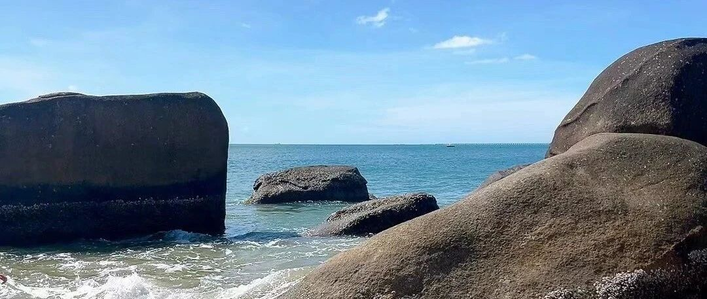

三亚真是个妙地方！（6天5晚攻略)
点击关注 秋秋在分享
一起实现财务自由退休
大家好，我是秋秋呀。
退休后，我终于有时间看看祖国的大好河山了！也打算把攻略都写一下。
一提到碧海蓝天、白沙细浪，那是天一冷我就想去的三亚！！！


待了半个多月，整理了一份6天5晚攻略，超全面建议收藏🤗。和秋秋一起开启三亚之旅吧～
一、行前准备
1. 证件：身份证、驾驶证（有租车计划）。
2. 衣物：记得带墨镜！太阳帽、泳衣、防晒衣安排上。三亚阳光强烈，防晒很重要。
3. 护肤品：高倍数防晒霜、晒后修复霜、保湿乳等。
4. 药品：防蚊液一定带！晕车药、肠胃药，以备不时之需。
5. 其他：相机、充电宝、防水袋等。
二、交通指南
1. 出发到达:
飞机✈️
三亚凤凰国际机场，国内各大城市都有直飞航班。小妙招:先飞海口，再动车去三亚更省钱～
高铁🚄
在市区，距离三亚湾椰梦长廊、亿恒夜市都挺近，会更方便。
大家也可以参考网友手绘地图，感受下站点到各个区距离。

2. 市内交通：
• 公交车：起步价2元，可以用天涯行/腾讯电子公交卡，不过网上反馈等车不方便。
• 出租车/网约车：我的主要出行方式，起步10元左右。注意，如果酒店订在海棠湾打车距离机场高铁较远，建议机场大巴。
• 租车：岛上可以租电瓶车50-80元一天，也可以神舟租车自驾100-500，更适合想自由行的小伙伴。
三、景点推荐
按照区域推荐一下～
天涯区：
商业文通文化中心，住宿较平价，景点聚集地。
1.天涯海角

进去是一个大公园。
天涯海角是两块石头写上字，也是三亚标志性景点。

公园全程走完2小时左右，你可以欣赏到美丽海景，第一站就感受到海岛的热情！
2.椰梦长廊
傍晚去，真的超级美～

沙滩上充满自由气息，在唱歌跳舞的人群感受碧海蓝天、椰树摇曳的浪漫氛围。
3.西岛
海水非常清澈！

大众点评购票92块钱。开放时间8.00-16.00。
建议9点之前上岛人会比较少，租个电动车，在岛上慢慢玩。
吃的话推荐阿敏小吃、周姐清凉补、南海渔叔糟粕醋。
吉阳区:
三亚市中东部。有大东海、亚龙湾，也有不错的度假酒店。
1.亚龙湾

2. 鹿回头风景区

三面环海，一面毗邻三亚市区，傍晚观看日出日落的绝佳之地。
可以在山上欣赏美丽的海景和三亚市区的全景。
海棠区：
三亚市东部新兴区域。有蜈支洲岛、亚特兰蒂斯水世界等景点，高端酒店和度假村。
1. 亚特兰蒂斯水世界
全年开放的水上乐园，项目多种多样。
• 成人票：298人民币；
• 儿童/长者票：238人民币；

比较受欢迎的项目:
• 霹雳小喇叭：从10米高的平台进入滑道，一路激起水花片片，十分好玩。
• 骇浪骑士：从塔底冲下，水会扑扑往脸上打，船在上坡时感觉会飞起来。
• 章鱼竞速：趴在一块瑜伽垫上一路从塔上的管子中冲到底下。
记得挑选合适的泳衣去玩。
2.蜈支洲岛

比西岛远，去的话要单独准备一天。
海水很透明，沙滩洁白细腻，有丰富的水上活动，喜欢浮潜的小伙伴别错过。
崖州区:
可以在最后一天，拿出半天时间去充满风情的天涯小镇，黑龙街好吃的很多。

还有崖州古城、大小洞天等景点。
海上观音圣像也在这，高105米，被誉为是“世界级、世纪级”的佛事工程。

每个区都有独特魅力，秋秋我是从天涯区玩到海棠湾，再返回崖州区。
每个区可以停留1到2天，不去海岛一天时间也够，整个三亚都要玩，建议最少6天。
四、住宿建议
我在不同区域都住了几天酒店，大家可以参考。

三亚湾
优点: 平价，距离机场高铁近，第一天最后一天安排。
1.三亚湾西藏大厦酒店
¥300


提供接机，距离机场10分钟左右，院子里有孔雀，送免费的清补凉。
2.三亚湾红树林酒店
¥348


里面是一个很大的园区，有木棉菩提各种类型，还有动物园还可以逛。
这里去亿恒夜市不远，附近好吃的也多。
3.三亚湾海旅君澜迎宾馆
¥297


只住一晚就选它！
有一个很大的游泳池连接到外面的大海。酒店大堂有音乐演奏。
很热情还有迎宾水果，晚上自助餐也很热闹。
大东海
优点：海滩比三亚湾近，美食和购物场所也多，适合价格适中，喜欢热闹的伙伴。
1.大东海南中国酒店
¥298


到达海滩5分钟，有沙滩躺椅可以躺。
周围有很多热带风情的小店，吃饭距离大菠萝商场也近。
2.大东海哈曼度假酒店
¥450


海景房和自助餐推荐！
自助餐种类丰富，屋顶有园区健身房，超大游泳池，喜欢那种无边际感拍照的可以试试。

亚龙湾
优点:许多老牌高端酒店和度假村，环境优美。
1.喜来登度假酒店¥1500


沙滩就在酒店里，酒店有大大小小七八个泳池。
带小朋友来很友好，有许多活动，去的时候还有人在里面举行婚礼，吃到了小蛋糕。
2.博后村民宿¥450

在度假酒店5公里，整个村子都是民宿。
这一次住的体验感不太好，就不推荐具体民宿了，大家一定不要只看网图就对了。
海棠湾
新开发的旅游区，豪华酒店都在这边，更适合想高端出行想安静的小伙伴。
JW万豪度假酒店
¥2000


我朋友住的这边。自己房间窗外就是游泳池，自助餐很好吃，完全可以待在酒店不出门了。
五、购物推荐
1. 国际免税城
全球最大的单体免税店，商品种类丰富，价格优惠。的面膜很划算，还有苹果手机，据说便宜几百块。
2. 第一市场
三亚传统市场，很热闹，卖衣服的也很多，这里海鲜、水果、工艺品，可以感受三亚的市井生活。
3.亿恒市场
来之前还偶遇了明星拍综艺，在这里买了两条裙子100多。街道里面的榴莲冰推荐！


关于吃的我还要单独写一篇。总之，三亚真的充满魅力！
北方的海感觉安静，三亚的海就是阳光沙滩、美食美景，很放松。
希望这篇攻略，对有海岛度假计划的小伙伴有帮助。快去开启你的梦幻之旅吧。
[26岁退休环游中国系列]，我也会一直更新哒。